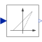

VoltageToDutyCycleLinearly transforms voltage to duty cycle |

|
Diagram
{kind=link}
Information
This information is part of the Modelica Standard Library maintained by the Modelica Association.
This model linearly transforms the input voltage signal into a duty cycle. For the unipolar case the input voltage range is between zero andvMax. In case of bipolar input the input voltage is in the range between -vMax and vMax.
Parameters (3)
| useBipolarVoltage |
Value: true Type: Boolean Description: Enables bipolar input voltage range |
|---|---|
| useConstantMaximumVoltage |
Value: true Type: Boolean Description: Enables constant maximum voltage |
| vMax |
Value: 0 Type: Voltage (V) Description: Maximum voltage range mapped to dutyCycle = 1 |
Connectors (3)
| v |
Type: RealInput Description: Voltage |
|
|---|---|---|
| dutyCycle |
Type: RealOutput Description: Duty cycle |
|
| vMaxExt |
Type: RealInput Description: External maximum voltage |
Components (5)
Used in Components (1)
|
Modelica.Electrical.Machines.Examples.ControlledDCDrives.Utilities Switching DC-DC inverter |